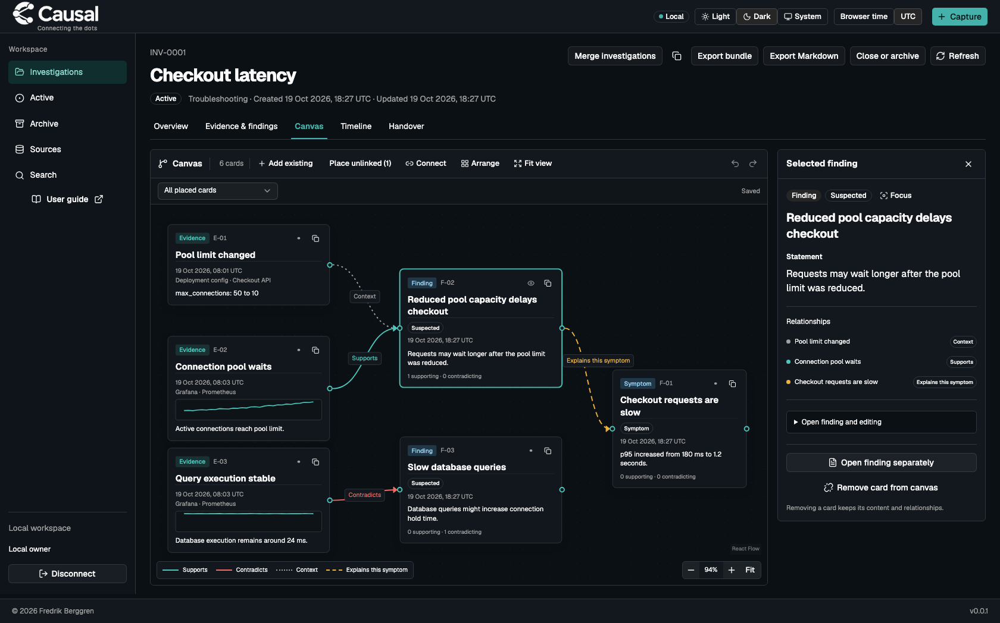
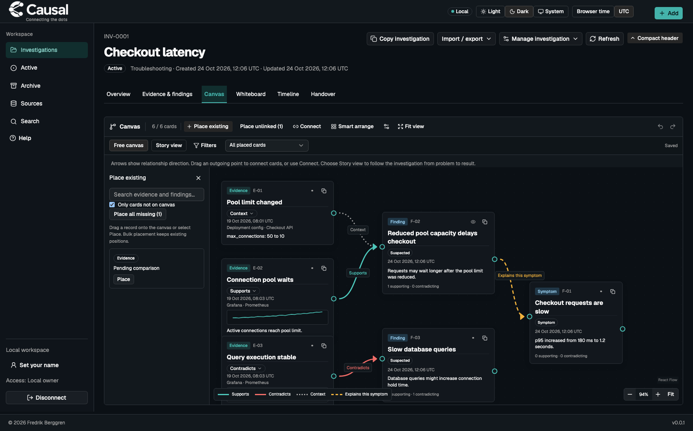
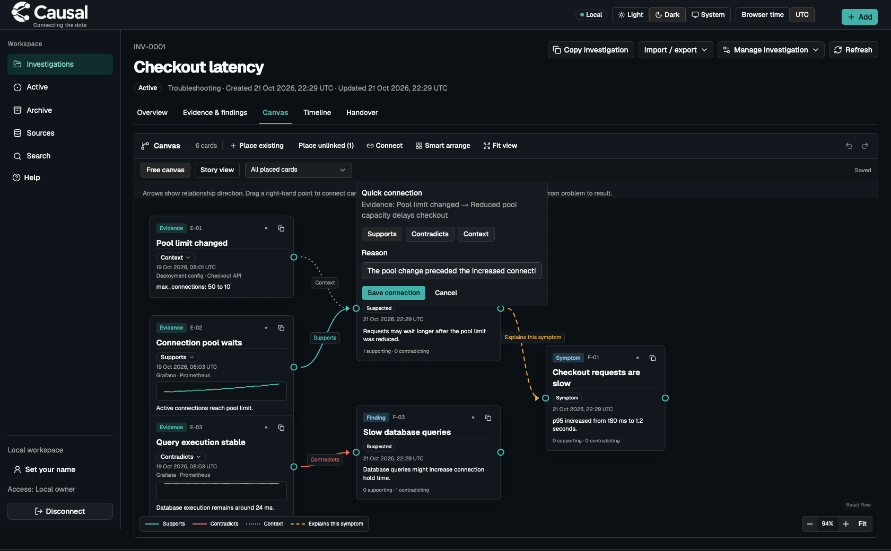

Causal user guide
Use Causal to keep an investigation understandable as evidence arrives and your assessment changes. Capture observations, connect them to findings, maintain a short Current State, and leave a handover that another person can act on.
This guide walks through Causal's investigation workflow. Screenshots use synthetic training data. See the feature tour for the complete screenshot gallery.
Jump to a section
Start here
- Install with
brew install fiddeb/tap/causal, or get a built causal binary from your maintainer. See release downloads. - In a terminal, run
causal serve. Keep that terminal running. The browser opens and connects automatically. - To reopen a running workspace, run
causal open. - Set your name using Set your name in the sidebar. You can skip this and add it later.
- Select Add → Investigation, enter a title and select Create investigation.
If your binary is in the repository's dist directory, use ./dist/causal instead of causal. The default address is http://127.0.0.1:7432; the default workspace is ~/Library/Application Support/Causal/. Press Ctrl-C in the server terminal to shut down. Your saved work stays in the workspace.
Opening the address alone does not connect a new browser. If you see Open your local workspace, run causal open. Routine use does not require copying a key. For a separate practice workspace, start:
causal serve --data-dir /private/tmp/causal-training --listen 127.0.0.1:7433
Use only invented data in the practice workspace. For a later reconnect:
causal open --data-dir /private/tmp/causal-training --api-url http://127.0.0.1:7433
The application's User guide link opens the published guide in a separate browser tab and preserves your investigation draft.

Understand the five building blocks
Causal stores what you submit. Run queries and commands in your usual tools, then bring their outputs here. A saved query, source URL or exact result does not prove that Causal executed it or independently verified it. You can use all of the main workflow without an AI account or an external integration.
A first investigation in 15 minutes
Work through this exercise with a colleague. Use Checkout latency as the title and treat every example as invented training data.
- Open Investigation details and actions, then Edit investigation. Set the scope to “Checkout API in production.” Record what you know about internal and external customer impact separately. Leave unknowns unknown.
- Select Add → Evidence. Paste “Checkout p95 rose from 180 ms to 1.2 seconds.” Choose Symptom, enter “Checkout requests are slow” as the statement, and select Save evidence and finding.
- Inspect the evidence. Select Investigate cause, write “A smaller pool may delay checkout,” and add “Compare pool limits and wait times” as the next check. Save it as a possible cause.
- Return to Overview. Promote the symptom to Current State, then use Edit Current State to record impact, uncertainty and the next action.
- Open Timeline. Find the observation and inspect its source and times.
- Select Add → Handover, review Prepared by, save, then read it in Handover. Create a report variant and download it for your colleague.
- Ask your colleague to identify the observed symptom, the suspected cause, what remains unknown and the next action. If they cannot, revise the State and create a new handover.

Describe the investigation
The title is enough to start. Add details when they help someone understand the work. Investigation details and actions → Edit investigation exposes kind, description, severity, scope, impact and external references. Troubleshooting, Incident and Analysis describe the purpose; they do not determine impact.
Unknown means you have not established impact. None observed means you have checked and have not observed it. Use Observed when you have evidence of impact, and describe the affected users or systems. Internal impact and external customer impact are independent.
Created and Updated are registration dates for the investigation. They do not establish when the incident started. Investigation history retains prior versions and lifecycle changes.
One place to add work
The Add menu explains each choice. Within an investigation, choose:
Investigation and Source are available in the Workspace group. Outside an investigation, open one before recording investigation work. Viewing a finding or evidence adds that context to the menu: new evidence can attach to the selected current finding; a new finding can cite the inspected evidence version as context. Review the statement and relation before saving. Opening a menu or an editor never creates a record. Place existing on Canvas arranges records that already exist; it does not create new evidence or findings.
Your profile and reported people
Use your name in the sidebar to edit Personal profile. The name is saved for this local workspace across investigations, browser tabs and restarts. Only the workspace owner can change it. It is a self-reported name, separate from the access credential, and does not verify an external person's identity.
Evidence capture offers the profile as Collected or registered by. Review or change it for each observation. Original reporter is who supplied it; Message author and Passed on by describe message provenance separately. Unknown people remain unspecified. External API and MCP clients do not inherit your profile name. Renaming the profile never changes existing evidence or handovers. Full backups preserve the profile; importing or merging another investigation leaves your profile unchanged.
Capture what you have
Use Add → Evidence from the shared header. When inspecting a current finding, the menu states that the evidence will attach to that finding. Paste notes, logs, messages, links or mixed query/result text. Attach files, drop them onto the text area or paste an image. A pasted filesystem path is just text; attach the file to save its bytes.
Choose Notes & images for free-form material, or Command & result for paired command and output fields. Its Source picker lets you search existing sources or type a new name and choose Add “name”. The new source is added to the catalog when you save the observation, ready for later reuse. Known target context is summarized; Source details (optional) exposes environment editing. An optional Title makes either easier to find. Causal records commands; it does not execute them.
Use Save & add next to keep collecting in the same panel. The saved count and a link confirm each completed save, and focus moves to the next empty observation. Keep source for next evidence retains the source, environment, command type and registering person within this capture session. Text, files, observation times, original reporter and relation reasons start empty each time. Uncheck it when moving to another source. Use Save evidence to save and close. The keyboard shortcuts are ⌘/Ctrl + Enter to continue and Shift + ⌘/Ctrl + Enter to save and close.
Expand Connect to a finding (optional) to attach the new evidence as you save. Each observation starts with Context; choose Supports or Contradicts and write its reason when appropriate. Linking does not confirm or reject the finding. People and code-formatting controls are optional disclosures, so they do not interrupt ordinary collection.

Evidence is the default save mode. Choosing Symptom or Suspected also creates a finding with your explicit statement. Context is a useful default relation when you have not yet assessed support. Choose Supports or Contradicts only when you can explain why.
Use Add field for a query, result or saved source. More fields… exposes time, source context, attribution, limitations and other optional metadata. Choose the query language or command type when known. This labels the reported operation; it never runs it. Use fenced code blocks for multiline logs or code. Text and indentation are preserved.
Closing a creation panel keeps its draft while navigating within this browser session. Reopen the same Add choice in the same investigation to continue. Reloading or disconnecting discards unsaved drafts; save before either action. If saving fails, read the error and retry the retained draft. When attachment linking fails after evidence has saved, follow the saved-evidence link before retrying the link; do not create another copy blindly.
Sources and attribution
Sources is an optional catalog of descriptions. Select Add new source, give it a name and kind, and add only the relevant fields. You can also create a source from Capture. Selecting a saved source copies its current revision and context into the evidence. Editing the catalog later does not rewrite old evidence. Archive sources that should no longer be offered for new captures; use the catalog status filter to find and restore them.
A source profile is not a live Grafana, Kubernetes or email connection. Keep credentials out of source descriptions. For a human report, preserve who originally reported it, who relayed it and whether your text is a quote, excerpt or summary. The person recording it in Causal is a separate role.
Times and timezone
Use the header's UTC or Browser time control to change how dates are displayed. Browser time uses the browser's timezone. The choice persists on that browser and does not change stored timestamps.
Capture and evidence editing have their own timezone selector for each time input. Check it before entering a wall-clock time. A clock time that occurs twice during a daylight-saving change requires an explicit UTC offset; a nonexistent clock time cannot be saved. Leave an unknown occurrence time unknown. Causal still records when the evidence was registered.
Inspect, correct and connect evidence
Open Evidence & findings, then Inspect evidence. Read the full text, reported query/result, attachments and source information. Result details shows fidelity and completeness. “Exact reported” concerns the submitted result; “partial” means the supplied content is incomplete.

Use Edit evidence to correct ordinary fields. Enter a Correction reason and save. This creates a new revision. Technical details → Evidence history lets you read the earlier revisions. A finding linked to revision 1 continues to cite revision 1 after you create revision 2. Review the new evidence and link or revise the assessment explicitly.
Technical details → Reviews records Reviewed, Disputed or Unreviewed with a rationale. Reviewing evidence does not confirm a cause. Use Link to finding to attach the inspected revision to an existing finding, select its relation and explain that relation. Keep contradictory observations attached so the next reader can judge the explanation.
Use the evidence text/context filters and Hide linked evidence to find unreviewed work. Findings remain visible while you filter evidence.
Personal read indicators
The small unread dot means you have not opened that exact revision in this browser. Opening evidence or finding details automatically changes its marker to an eye icon. Lists, hovering and background refresh do not mark a card read. The indicators also appear in Overview and Timeline.

A correction creates a new revision that starts unread. Opening revision 1 does not mark revision 2 read. These markers belong to the current browser and local principal; they do not synchronize to another browser or device. Clearing browser storage can clear them. Reading is separate from Reviews, supporting evidence and causal certainty. It creates no investigation event and does not make a stale Current State fresh.

Copy and download
Copy evidence copies readable text and file references. It does not put binary attachments on the clipboard. Export evidence offers readable Markdown, complete JSON and complete content for an agent. Other cards have equivalent copy/export actions. If clipboard access fails, use a download.
Copy includes saved content, not content fetched from external links. Inspect the chosen revision before sharing. Use a bundle when the recipient needs to import the complete investigation with its files and history.
Assess possible causes
From an evidence inspector, select Investigate cause. Write an explanation, optionally name the symptom it explains, choose the evidence relation and add a next check. You can also select an existing possible cause. The cited symptom and evidence revisions stay exact, even if someone later corrects them.

Open a finding and select Revise assessment to change it. Explain what changed. Confirmation requires supporting evidence, a mechanism, the scope where the explanation applies and remaining uncertainty. A successful restart or a similar earlier incident alone does not establish a cause. Use Plan or record a test (optional) for a check, prediction and reported outcome.
The Critical marker highlights a finding; it does not change certainty. A finding can move back from Confirmed to Suspected when new evidence challenges it. Unrelated findings remain accessible in their expandable section.
Use Capture improvement on evidence or a finding for Toil or Cleanup. Record a next action and references when useful. These annotations preserve follow-up knowledge; they are not a separate task board. An unrelated lead may still reveal worthwhile cleanup.
Keep Current State useful
Write a short summary that answers: what is affected, what do we know, what remains uncertain, and what will happen next? Use Promote to Current State on a symptom or evidence to add an attributed entry with an exact reference. Use Edit Current State for the summary and next steps. Optional assessment sections and structured fields support more detail when needed.

New evidence can make the summary stale. Causal displays Evidence changed since the current state was updated and keeps your prose intact. Read the changes in State details or choose Review changes before saving in the editor. After checking them, choose Use reviewed basis, revise your summary as needed and save. Promoting one item does not mean that you reviewed every intervening change.
Read full State and history exposes source references and previous State revisions. If another client changes the same object while you edit, Causal preserves your draft and rejects a conflicting save. Keep your draft text, read the latest version through the offered review action, and start a fresh edit that incorporates both changes.
Connect the dots on Canvas
Open Canvas to arrange existing evidence and findings in a spatial view. Your first canvas is empty. Select Place existing, find a record, then drag it onto the workspace or use its Add button. This places the same record; it does not copy or change its content.
Place existing initially shows only cards not on Canvas. Clear Only cards not on canvas to include placed cards. Use Place all missing to add every absent record, including linked records. Search still helps you add one record at a time.
Use Place unlinked in the toolbar to place only records without any incoming or outgoing relationship. Both batch actions keep existing cards and the viewport in place and can be undone in one step. They do not create relationships.

- Move cards to arrange your reasoning. Use Arrange only when you want a new automatic arrangement. Fit view, zoom controls and panning change your view.
- Select a card to read its details on the right. Evidence includes the complete queries, results and images. For a finding, expand Open finding and editing to read the full assessment or revise it. On narrow screens, inspection opens in a side sheet. Compact previews alone do not mark records read.
- Drag from a card's right handle to another card's left handle. A compact editor opens at the arrow with both records already chosen. Select Supports, Contradicts or Context, enter a short Reason and press Enter. Escape or Cancel closes without saving. Failed saves keep the draft for retry. The toolbar Connect form remains available for selecting records without dragging. Findings retain the existing Explains this symptom target. An arrow never confirms a finding automatically.
- Select an edge to inspect its reason or change/remove the relationship. If it is based on earlier content, the inspector offers that exact underlying version. Cards continue showing current content; revision numbers stay in details.
- Use Focus to highlight a selected card and its neighbors. The gap filter shows findings without evidence or unlinked evidence. Counts consider the whole investigation, including records not placed on this canvas.
- Undo and Redo apply to the current session. Reversing a relationship creates a normal reasoned finding revision; it does not erase history. Reloading clears the undo stack. A concurrent edit or privacy cleanup can block an old action.


Canvas saves one shared layout per investigation in the local workspace. Wait for Saved before closing the browser. A failed save retains the current placement and offers retry. If another tab changed the layout, review its saved positions before choosing that version or explicitly replacing it with yours. Layout movement creates no Timeline event and does not make Current State stale.
Remove card from canvas only removes its placement. The evidence, finding and relationships remain. Closed or archived investigations remain readable; reopen them before changing domain relationships. Write-capable users may still arrange their presentation.
Workspace backups retain layout. Investigation bundle import and merge preserve normal domain relationships but do not copy geometry; newly imported/copied records are available in Place existing. Handovers preserve their normal content and relationships. Fixed canvas images and multiple named canvas views are not part of this version.
Read the Timeline
Event chronology focuses on current evidence observations. It uses reported occurrence times and groups unknown occurrences separately. Summary saves, finding changes, reviews and other investigation administration stay out of this default incident view. A correction shows the current observation with its correction marker.

Registration history shows when Causal learned about or recorded every change, including investigation creation, assessments and summary updates. Switching views does not delete, retime or rewrite the journal.

Expand Filters to select event type, classification or environment. Select an event to inspect it and follow the exact evidence or assessment link. Source and times distinguishes occurrence, observation and registration. An explicit event-type or classification filter can expose the selected activity even in Event chronology; its registration-time label remains clear. When new observations arrive, use the update action to refresh the list without losing your place. Summary-only changes do not raise an incident-update notification.

Hand over to another person
Prepared by is saved with the base handover. A report variant inherits that sender and records its own Report by name. Review it before saving. Earlier unnamed handovers show Not specified; they are never filled from the current profile. The saved names travel with copy and exports, including HTML, Markdown and investigation bundles.
- Review Current State and its freshness. Make uncertainty and next actions explicit.
- Select Add → Handover, review Prepared by and select Save handover. Open Handover to read the snapshot.
- Use Edit new report variant if the recipient needs a shorter or audience-specific explanation. Choose audience and prose language, write the report, select images and preview it.
- Select Save report variant, then Save HTML with images for a portable reading copy. Markdown is also available. Agent export provides complete structured content.

A handover is fixed. Later investigation changes do not update it; create a new snapshot when you need a newer account. Report variants keep the source snapshot and original evidence language. Selecting a prose language does not automatically translate your writing. Permanent deletion is an explicit exception that can remove dependent content from old snapshots and reports.
Close, archive and resume
Select Close or archive. For recovery without an established cause, choose Mitigated, keep cause status Unknown, and describe the closure and observed recovery. Record actions only if you know they occurred. Keep remaining questions for later work. The result reads Mitigated, root cause unknown.

Use Explained for a completed explanation, Closed unresolved when recovery has not been established, or Other with a clear summary. A Confirmed cause status in closure requires actual confirmed finding revisions.
From a resolved investigation, use Archive or reopen. Archive retains its content and outcome for search. Restore investigation returns it to the state it had before archiving; restoring a resolved case does not reopen it. Reopen it explicitly to continue editing evidence and State. Reopening clears the current closure and preserves the previous closure in history. Archived cases cannot accept material edits or new handovers.
Use a merge when two investigations turn out to describe the same work and you want one active place to continue. Open the investigation you want to keep as the primary, then select Merge investigations. The primary must be active. Select an active or resolved Investigation to archive, enter a Merge reason and select Preview merge.

Check the primary, source, record counts and archive effect. Confirm with Merge and archive source only when that scope is right. Cancellation changes nothing. If either case changes after the preview, use Preview again and review the new scope before confirming.
The primary receives independent copies of the source evidence, findings, revisions, reviews and attachments. Their supporting and contradictory relations remain intact, with remapped exact references. Causal does not deduplicate observations, reconcile explanations or write a combined summary for you. Review Current State after the merge; the added material can make it stale.

The source becomes archived and retains its originals, State revisions, reports and history. Both investigations link to each other. Restoring the source does not undo the copied records or permit a repeated merge of the same source. Later editing or deletion of the archived source does not change the primary's independent copies. Importing a single-case bundle preserves provenance but does not recreate workspace links to other cases; a workspace backup retains them.
Search and reuse earlier work
Search covers investigations across lifecycle states; Archive starts with archived cases. Use text, a metadata key/value pair or More filters for scope, status, classification, impact and other context. Current revisions are the default; include historical revisions when you need an earlier view.

Results identify matching objects and exact revisions. Compare case shows symptoms and cause assessments separately, including supporting and contradicting evidence. From Search across investigations within your current case, Use as suspected finding brings a lead back with attribution. It creates a suspected finding; test it in the current context before making a causal claim.
Export, import and protect your workspace
Choose Export Markdown for reading or Export bundle for a complete transfer. Downloaded copies are independent of the live workspace. To import a bundle into the running destination workspace, use the CLI:
causal import validate case.zip
causal import apply case.zip --idempotency-key checkout-import-1
Validation does not create an investigation. Apply imports with new local IDs. Reuse the same idempotency key only for a retry of that same file. Use a new key when you intentionally want another import.
Backups protect the whole workspace, including the source catalog and local credentials. A case export is not a workspace backup.
causal backup create --output workspace-backup.zip
causal backup restore workspace-backup.zip --destination-name recovery-check
Restore creates WORKSPACE/restores/recovery-check; it does not replace the running workspace. The destination must not already exist. Stop the server, start the restored directory with causal serve --data-dir PATH, and check its content before relying on it. Retain the original until recovery is verified. Backups contain private content and keys; store them with restricted access and encryption. See backup and recovery.
Permanent deletion
Ordinary corrections preserve old revisions. To remove sensitive evidence, open its Technical details → Permanently delete evidence. Supply a reason that does not repeat the sensitive content, review the affected objects, then continue and type the exact evidence name. Cancel if the scope is wrong.

Deletion can affect findings, State, snapshots, whole authored reports, attachments and managed copies. Causal retains a content-free tombstone. Downloaded exports, clipboard content, shared files, external backups and independent restored workspaces must be handled separately. See the cleanup procedure.
Delete a whole archived investigation
The local owner can permanently remove a whole investigation once it is archived. In Archive, choose Delete investigation on its row, or open the archived case and use the same action. Active investigations must be archived first. This is separate from ordinary archiving and from deleting one evidence item.

Enter a Deletion reason, select Preview deletion and read the affected record categories and managed-copy consequences. Choose Continue to confirmation, type the investigation name exactly and select Delete permanently. Cancel if the scope is wrong. A changed or restored case requires a new eligible preview.

Removal deletes the case's owned content and history; only a minimal administrative removal record can remain. Other investigations and shared source profiles stay intact. Independent merge copies in another investigation remain independent. Managed backups/uploads can be removed as disclosed by the preview. External exports, shared files and independent backups still need manual cleanup.
Optional terminal and agent workflows
The browser, CLI and MCP share the same investigation data. With the server running, use the real investigation ID returned by investigation list:
causal investigation list --json
causal capture --investigation INVESTIGATION-ID --text 'Reported checkout latency is elevated'
causal timeline --investigation INVESTIGATION-ID --order event-time
causal state show --investigation INVESTIGATION-ID
causal handover create --investigation INVESTIGATION-ID
Configure a compatible external agent's stdio command as causal mcp. Use a separate client key for integrations and follow CLI and MCP setup. The optional Causal investigation skill gives the agent workflow guidance. Causal does not choose a model, run the agent's queries or automatically certify its conclusions.
When something is unexpected
Use Light, Dark or System in the header to choose a theme. The same views work on narrow screens. Theme and time-display preferences affect presentation; they do not change evidence or certainty.
Onboarding checklist
Before working on a real investigation, the new user should be able to:
- Start and reopen the correct local workspace.
- Capture an observation with a source or an explicit unknown.
- Distinguish a symptom, suspected cause and confirmed assessment.
- Link supporting and contradictory evidence without changing the original.
- Explain why a personal read marker does not verify an observation.
- Write a useful Current State and review its freshness.
- Find an event by occurrence and registration time.
- Create and share a handover with uncertainty and a clear next action.
- Resolve with an unknown cause, archive, restore and reopen.
- Preview a merge and identify which case stays active and which is archived.
- Find prior work without treating a match as proof.
- Explain the difference between a report, a bundle, a backup and permanent deletion.
Review impact and Current State
Use Edit impact in Overview, or Edit Current State. Work through impact, what we know, remaining uncertainty and next steps. External and internal impact are independent: Unknown means not yet assessed, None observed means checked with no impact found, and Observed means impact was seen. Prose does not set these statuses. The full editor saves structured impact and the written summary together. A stale version or basis saves neither; review changes and current impact before explicitly retrying. Cause status is assessed separately when closing an investigation. Code formatting and exact references remain optional details. Focused fact/next-step edits preserve all other sections.
A finding's classification describes your assessment: Symptom is the observed problem; Suspected is a possible explanation; Confirmed requires supporting evidence, mechanism, scope and remaining uncertainty; Rejected records an explanation ruled out; Unrelated moves a finding out of this investigation's explanation without changing its evidence or other links. The forms include these definitions and preserve reasons for revisions.